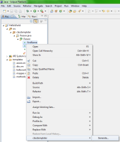

The output path and filename can be defined in the first line of the template. You can use ${classname} and ${class.workspaceRelativePath} variables.
outpath:workspace/relative/path${classname}Hello.java
hello world
#foreach( $attr in $attrs )
${attr.name} - ${attr.type}
#end
You can select multiple classes in Package Explorer, and execute classtemplater for each class.
The generated code doesn't appear in the textbox. You have to use "Save to file" button. That means, this feature works only if youe set outpath in your template.
You can select more than one template in classtemplater window.
The generated code doesn't appear in the textbox. You have to use "Save to file" button. That means, this feature works only if youe set outpath in your template.
You can combine the previous two features
You can mark "handwritten-code" parts in your template. You can modify these in the generated code, and it will be kept during codegeneration.
outpath:workspace/relative/path${classname}Hello.java
hello world
/*hc:usercode*/
/*hc*/
#foreach( $attr in $attrs )
${attr.name} - ${attr.type}
#end
After codegeneration the hc:usercode part will be in generated code. For the java compiler it is comment. You can write code between /*hc*/. "usercode" is just an example id. However it must be unique in a template.
#if (${attr.hasAnnotation("SuppressWarnings")})
it has been annoted
#end
#if (${attr.hasAnnotation("SuppressWarnings")})
${attr.getAnnotations().get("SuppressWarnings").getParams().get("value")}
#end
attr.getAnnotations() returns null, if no annotation defined for the attribute. So attr.getAnnotations().get("SuppressWarnings") will fail if you don't check existence of annotation with ${attr.hasAnnotation("SuppressWarnings")}.
#if (${method.hasAnnotation("SuppressWarnings")})
Supress warnings
#end
You can select a subset of class-attributes using Package Navigator (or Outline):
You can select a subset of class-methods the same way as selecting attributes. See screenshot in previous section!
public class Class {
String name;
String packageName;
List<Attribute> attributes = new ArrayList<Attribute>();
List<Method> methods = new ArrayList<Method>();
Map<String, Annotation> annotations = new HashMap<String, Annotation>();
String workspaceRelativePath;
public boolean hasAnnotation(String name){
return (annotations.get(name) != null);
}
public List<Property> getProperties()
// returns package without the last level segments
public String getParentPackage(int level);
// returns path without the last level segments
public String getParentRelativePath(int level);
}
These methods can be used in templates. For example ${attr.name} vagy ${attr.final} (for boolean types you have to skip starting "is")
When using as method parameter, only "name", "type", "isList", "isGeneric" and "firstGenType" works!
public class Attribute {
String name;
String type;
String visibility;
boolean isPrivate = false;
boolean isPublic = false;
boolean isProtected = false;
boolean isStatic = false;
boolean isAbstract = false;
boolean isFinal = false;
boolean isList = false;
boolean isGeneric = false;
boolean isEnum = false;
String fistGenType;
Set<Importable> typesInGenerics = new HashSet<Importable>();
Map<String, Annotation> annotations = new HashMap<String, Annotation>();
public String getNameL1(){
return StringUtil.getL1(name);
}
public String getNameU1(){
return StringUtil.getU1(name);
}
public String getTypeL1(){
return StringUtil.getL1(type);
}
public String getTypeU1(){
return StringUtil.getU1(type);
}
public boolean hasAnnotation(String name){
return (annotations.get(name) != null);
}
public String getFistGenTypeU1() {
return StringUtil.getU1(fistGenType);
}
public String getFistGenTypeL1() {
return StringUtil.getL1(fistGenType);
}
public String getAnnotationParamValue(String annotationName, String paramName){
if (!annotations.containsKey(annotationName))
return "";
String paramValue = annotations.get(annotationName).getParamValue(paramName);
return paramValue == null ? "" : paramValue;
}
/**
* returns package without the last level segments
*/
public String getParentPackage(int level)
public List<String> getFirstLevelGenericTypes() {
return firstLevelGenericTypes;
}
}
Note that although method parameters are represented the same class as class fields, method parameters have some limitation. See description at Attribute section!
public class Method {
String name;
List<Attribute> parameters = new ArrayList<Attribute>();
String returnType;
String visibility;
boolean isPrivate = false;
boolean isPublic = false;
boolean isProtected = false;
boolean isStatic = false;
boolean isAbstract = false;
boolean isFinal = false;
Set<Importable> typesInGenerics = new HashSet<Importable>();
Map<String, Annotation> annotations = new HashMap<String, Annotation>();
public String getNameU1() {
return StringUtil.getU1(name);
}
public String getNameL1() {
return StringUtil.getL1(name);
}
public boolean hasAnnotation(String name){
return (annotations.get(name) != null);
}
public String getAnnotationParamValue(String annotationName, String paramName){
if (!annotations.containsKey(annotationName))
return "";
String paramValue = annotations.get(annotationName).getParamValue(paramName);
return paramValue == null ? "" : paramValue;
}
public List<String> getExceptions() {
return exceptions;
}
public String getFirstException() {
return firstException;
}
public class Annotation {
String name;
Map<String, String> params = new HashMap<String, String>();
Map<String, Object> paramObjects = new HashMap<String, Object>();
public String getParamValue(String name){
return params.get("name");
}
public List<Annotation> getNestedAnnotationList(String name);
public Object getParamObject(String name);
public Boolean getParamBoolean(String name);
public Double getParamDouble(String name);
public Integer getParamInteger(String name);
public Long getParamLong(String name);
public List<String> getParamStringList(String name);
}
public class Property {
/** e.g. String getLabel() */
Method getter;
/** e.g. void setLabel(String label) */
Method setter;
/** e.g. "label" */
String name;
/** e.g. "String" */
String returnType;
/** e.g. "String" */
String inputType;
/** e.g. "label" */
String inputName;
}